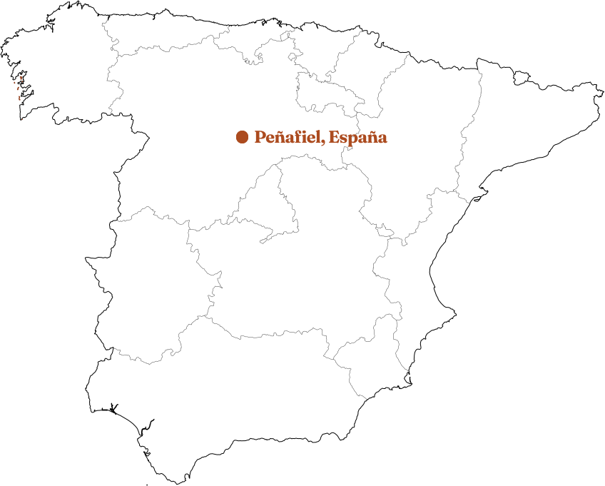

Ribera del DueroRibera del Duero · Denominación de Origen
Peñafalcón
Bodega · Peñafiel, Valladolid — España
- Uva
- Tempranillo 100% · Tinta Fina
- Viñedos
- Pagos de Santa Cruz, Carraovejas y La Blanquera
- Vinificación
- Fermentación natural · levaduras autóctonas
- Crianza
- Roble americano y francés
304días en barrica
14%grado · vol.
2021añada
Bodega Peñafalcón is a family winery in Peñafiel, the heart of Spain's Ribera del Duero. Founded by Casimiro Marcos and María José Arranz, the estate draws its Tempranillo from its own pagos of limestone soil, fermenting with native yeasts and resting the wine in American and French oak — bold, expressive reds that balance power with finesse.
Vendimia seleccionada · Embotellado en la propiedad